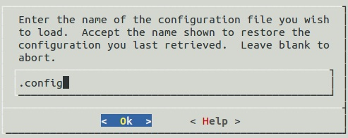
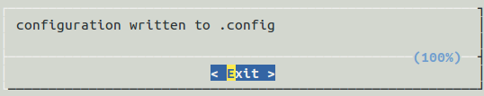

Application Development Primer
Overview
The Zephyr Kernel’s build system is based on the Kbuild system used in the Linux kernel.
The build system is an application-centric system and requires an application build to initiate building the kernel source tree. The application build drives the configuration and build process of both the application and kernel, compiling them into a single binary.
The Zephyr Kernel’s base directory hosts the kernel source code, the configuration options, and the kernel build definitions.
The files in the application directory links the kernel with the application. It hosts the definitions of the application, for example, application-specific configuration options and the application’s source code.
An application in the simplest form has the following structure:
- Application source code files: An application typically provides one
or more application-specific files, written in C or assembly language. These
files are usually located in a sub-directory called
src. - Kernel configuration files: An application typically provides
a configuration file (
.conf) that specifies values for one or more kernel configuration options. If omitted, the application’s existing kernel configuration option values are used; if no existing values are provided, the kernel’s default configuration values are used. - Makefile: This file tells the build system where to find the files mentioned above, as well as the desired target board configuration.
Once the application has been defined, it can be built with a single make
call.
The results of the build process are located in a sub-directory called
outdir/BOARD. This directory contains the files generated by the build
process, the most notable of which are listed below.
- The
.configfile that contains the configuration settings used to build the application. - The various object files (
.ofiles and.afiles) containing custom-built kernel and application-specific code. - The
zephyr.elffile that contains the final combined application and kernel binary.
Application Structure
Create one directory for your application and a sub-directory for the application’s source code; this makes it easier to organize directories and files in the structure that the kernel expects.
Create an application directory structure outside of the kernel’s installation directory tree. Often this is your workspace directory.
In a console terminal, navigate to a location where you want your application to reside.
Create the application’s directory, enter:
$ mkdir appNote
This directory and the path to it, are referred to in the documentation as
~/app.Create a source code directory in your
~/app, enter:$ cd app $ mkdir src
The source code directory
~/app/srcis created.-- app |-- src
Application Definition
An application is integrated into the build system by including the Makefile.inc file provided.
include $(ZEPHYR_BASE)/Makefile.inc
The following predefined variables configure the development project:
- ZEPHYR_BASE: Sets the path to the kernel’s base directory.
This variable is usually set by the
zephyr_env.shscript. It can be used to get the kernel’s base directory, as used in the Makefile.inc inclusion above, or it can be overridden to select an specific instance of the kernel. - PROJECT_BASE: Provides the developer’s application project
directory path. It is set by the
Makefile.incfile. - SOURCE_DIR: Overrides the default value for the application’s
source code directory. The developer source code directory is set to
$(PROJECT_BASE/)src/by default. This directory name should end with slash ‘/’. - BOARD: Selects the board that the application’s build will use for the default configuration.
- CONF_FILE: Indicates the name of a configuration fragment file. This file includes the kconfig configuration values that override the default configuration values.
- O: Optional. Indicates the output directory that Kconfig uses.
The output directory stores all the files generated during the build
process. The default output directory is the
$(PROJECT_BASE)/outdirdirectory.
Makefiles
Overview
The build system defines a set of conventions for the correct use of Makefiles in the kernel source directories. The correct use of Makefiles is driven by the concept of recursion.
In the recursion model, each Makefile within a directory includes the source code and any subdirectories to the build process. Each subdirectory follows the same principle. Developers can focus exclusively in their own work. They integrate their module with the build system by adding a very simple Makefile following the recursive model.
Makefile Conventions
The following conventions restrict how to add modules and Makefiles to the build system. These conventions ensure the correct implementation of the recursive model.
- Each source code directory must contain a single Makefile. Directories without a Makefile are not considered source code directories.
- The scope of every Makefile is restricted to the contents of that directory. A Makefile can only make a direct reference to files and subdirectories on the same level or below.
- Makefiles list the object files that are included in the link process. The build system finds the source file that generates the object file by matching the object file name to the source file.
- Parent directories add their child directories into the recursion model.
- The root Makefile adds the directories in the kernel base directory into the recursion model.
Adding Source Files
The Makefile must refer the source build indirectly, specifying the object file
that results from the source file using the obj-y variable. For
example, if the file that we want to add is a C file named <file>.c the
following line should be added in the Makefile:
obj-y += <file>.o
Note
The same method applies for assembly files with the .S extension.
Source files can be added conditionally using configuration options. For
example, if the option CONFIG_VAR is set and it implies that a source
file must be added in the compilation process, then the following line adds the
source code conditionally:
obj-$(CONFIG_VAR) += <file>.o
Adding Directories
Add a subdirectory to the build system by editing the Makefile in its
directory. The subdirectory is added using the obj-y variable. The
correct syntax to add a subdirectory into the build queue is:
obj-y += <directory_name>/
The backslash at the end of the directory name signals the build system that a directory, and not a file, is being added to the build queue.
The conventions require us to add only one directory per line and never to mix
source code with directory recursion in a single obj-y line. This
helps keep the readability of the Makefile by making it clear when an item adds
an additional lever of recursion.
Directories can also be conditionally added:
obj-y-$(CONFIG_VAR) += <directory_name>/
The subdirectory must contain its own Makefile following the rules described in Makefile Conventions.
Application Makefile
Create an application Makefile to define basic information, such as the board
configuration used by the application. The build system uses the Makefile to
build a zephyr.elf image that contains both the application and the
kernel libraries.
Open the
Makefileand add the following mandatory entries using any standard text editor.Note
Ensure that there is a space before and after each
=.Add the name of the default board configuration for your application on a new line:
BOARD = board_configuration_name
The supported boards can be found in Supported Boards.
Add the name of the default kernel configuration file for your application on a new line:
CONF_FILE ?= kernel_configuration_name
Include the mandatory
Makefileon a new line:include ${ZEPHYR_BASE}/Makefile.incSave and close the
Makefile.
Below is an example Makefile:
BOARD = qemu_x86
CONF_FILE = prj.conf
include ${ZEPHYR_BASE}/Makefile.inc
Application Configuration
The application’s kernel is configured using a set of configuration options that can be customized for application-specific purposes. The Zephyr build system takes a configuration option’s value from the first source in which it is specified.
The available sources are (in order):
- The application’s current configuration. (i.e. The
.configfile.) - The application’s default configuration. (i.e. The
.conffile.) - The board configuration used by the application.
(i.e. The board’s
.defconfigfile.) - The kernel’s default configuration.
(i.e. One of the kernel’s
Kconfigfiles.)
For information on available kernel configuration options, including inter-dependencies between options, see the Configuration Options Reference Guide.
Default Board Configuration
An application’s .conf file defines its default kernel configuration.
The settings in this file override or augment the board configuration settings.
The board configuration settings can be viewed
in $ZEPHYR_BASE/boards/ARCHITECTURE/BOARD/BOARD_defconfig.
Note
When the default board configuration settings are sufficient for your
application, a .conf file is not needed. Skip ahead to
Overriding Default Configuration.
Navigate to the
app, and create theprj.conffile. Enter:$ vim prj.conf
The default name is
prj.conf. The filename must match theCONF_FILEentry in the applicationMakefile.Edit the file and add the appropriate configuration entries.
- Add each configuration entry on a new line.
- Begin each entry with
CONFIG_. - Ensure that each entry contains no spaces (including on either side of the = sign).
- Use a # followed by a space to comment a line.
The example below shows a comment line and a board configuration override in the
prj.conf.# Enable printk for debugging CONFIG_PRINTK=y
Save and close the file.
Overriding Default Configuration
Override the default board and kernel configuration to temporarily alter the application’s configuration, perhaps to test the effect of a change.
Note
If you want to permanently alter the configuration you
should revise the .conf file.
Configure the kernel options using a menu-driven interface. While you can add entries manually, using the configuration menu is a preferred method.
Run the make menuconfig rule to launch the menu-driven interface.
In a terminal session, navigate to the application directory (
~/app).Enter the following command:
$ make [BOARD=<type>] menuconfig
A question-based menu opens that allows you to set individual configuration options.
Set kernel configuration values using the following key commands:
Use the arrow keys to navigate within any menu or list.
Press
Enterto select a menu item.- Type an upper case
YorNin the square brackets [ ] to enable or disable a kernel configuration option.
- Type an upper case
Type a numerical value in the round brackets ( ).
Press
Tabto navigate the command menu at the bottom of the display.Note
When a non-default entry is selected for options that are nonnumerical, an asterisk
*appears between the square brackets in the display. There is nothing added added the display when you select the option’s default.
For information about any option, select the option and tab to <Help > and press
Enter.Press
Enterto return to the menu.After configuring the kernel options for your application, tab to < Save > and press
Enter.The following dialog opens with the < Ok > command selected:

Press
Enterto save the kernel configuration options to the default file name; alternatively, type a file name and pressEnter.Typically, you will save to the default file name unless you are experimenting with various configuration scenarios.
An
outdirdirectory is created in the application directory. The outdir directory contains symbolic links to files under$ZEPHYR_BASE.Note
At present, only a
.configfile can be built. If you have saved files with different file names and want to build with one of these, change the file name to.config. To keep your original.config, rename it to something other than.config.Kernel configuration files, such as the
.configfile, are saved as hidden files inoutdir. To list all your kernel configuration files, enter ls -a at the terminal prompt.The following dialog opens, displaying the file name the configuration was saved to.
Press
Enterto return to the options menu.To load any saved kernel configuration file, tab to < Load > and press
Enter.The following dialog opens with the < Ok > command selected:
To load the last saved kernel configuration file, press < Ok >, or to load another saved configuration file, type the file name, then select < Ok >.
Press
Enterto load the file and return to the main menu.To exit the menu configuration, tab to < Exit > and press
Enter.The following confirmation dialog opens with the < Yes > command selected.
Press
Enterto retire the menu display and return to the console command line.
{kind=link}
{kind=link}
{kind=link}
{kind=link}
Application-Specific Code
Application-specific source code files are normally added to the application’s
src directory. If the application adds a large number of files the
developer can group them into sub-directories under src, to whatever
depth is needed. The developer must supply a Makefile for the
src directory, as well as for each sub-directory under src.
Note
These Makefiles are distinct from the top-level application Makefile
that appears in ~/app.
Application-specific source code should not use symbol name prefixes that have been reserved by the kernel for its own use. For more information, see
The following requirements apply to all Makefiles in the src
directory, including any sub-directories it may have.
During the build process, Kbuild identifies the source files to compile into object files by matching the file names identified in the application’s Makefile(s).
Important
A source file that is not referenced by any Makefile is not included when the application is built.
A Makefile cannot directly reference source code. It can only reference object files (
.ofiles) produced from source code files.A Makefile can only reference files in its own directory or in the sub-directories of that directory.
A Makefile may reference multiple files from a single-line entry. However, a separate line must be used to reference each directory.
Create a directory structure for your source code in
srcand add your source code files to it.Create a
Makefilein thesrcdirectory. Then create an additionalMakefilein each of the sub-directories under thesrcdirectory, if any.Use the following syntax to add file references:
obj-y += file1.o file2.o
Use the following syntax to add directory references:
obj-y += directory_name/**
This example is taken from the Philosopher’s Sample. To examine this file in
context, navigate to: $ZEPHYR_BASE/samples/philosophers/src.
obj-y = main.o
Build an Application
The Zephyr build system compiles and links all components of an application into a single application image that can be run on simulated hardware or real hardware.
Navigate to the application directory
~/app.Enter the following command to build the application’s
zephyr.elfimage using the configuration settings for the board type specified in the application’sMakefile.$ makeIf desired, you can build the application using the configuration settings specified in an alternate
.conffile using theCONF_FILEparameter. These settings will override the settings in the application’s.configfile or its default.conffile. For example:$ make CONF_FILE=prj.alternate.conf
If desired, you can build the application for a different board type than the one specified in the application’s
Makefileusing theBOARDparameter. For example:$ make BOARD=arduino_101
Both the
CONF_FILEandBOARDparameters can be specified when building the application.
Rebuilding an Application
Application development is usually fastest when changes are continually tested. Frequently rebuilding your application makes debugging less painful as the application becomes more complex. It’s usually a good idea to rebuild and test after any major changes to the application’s source files, Makefiles, or configuration settings.
Important
The Zephyr build system rebuilds only the parts of the application image potentially affected by the changes. Consequently, rebuilding an application is often significantly faster than building it the first time.
Sometimes the build system doesn’t rebuild the application correctly because it fails to recompile one or more necessary files. You can force the build system to rebuild the entire application from scratch with the following procedure:
Navigate to the application directory
~/app.Enter the following command to delete the application’s generated files for the specified board type, except for the
.configfile that contains the application’s current configuration information.$ make [BOARD=<type>] clean
Alternatively, enter the following command to delete all generated files for all board types, including the
.configfiles that contain the application’s current configuration information for those board types.$ make pristineRebuild the application normally following the steps specified in Build an Application above.
Run an Application
An application image can be run on real or emulated hardware. The kernel has built-in emulator support for QEMU. It allows you to run and test an application virtually, before (or in lieu of) loading and running it on actual target hardware.
Open a terminal console and navigate to the application directory
~/app.Enter the following command to build and run the application using a QEMU-supported board configuration, such as qemu_cortex_m3 or qemu_x86.
$ make [BOARD=<type> ...] run
The Zephyr build system generates a
zephyr.elfimage file and then begins running it in the terminal console.Press
Ctrl A, Xto stop the application from running in QEMU.The application stops running and the terminal console prompt redisplays.
Application Debugging
This section is a quick hands-on reference to start debugging your application with QEMU. Most content in this section is already covered on QEMU and GNU_Debugger reference manuals.
In this quick reference you find shortcuts, specific environmental variables and parameters that can help you to quickly set up your debugging environment.
The simplest way to debug an application running in QEMU is using the GNU Debugger and setting a local GDB server in your development system through QEMU.
You will need an ELF binary image for debugging purposes. The build system
generates the image in the output directory. By default, the kernel binary name
is zephyr.elf. The name can be changed using a Kconfig option.
We will use the standard 1234 TCP port to open a GDB server instance. This port number can be changed for a port that best suits the development environment.
You can run Qemu to listen for a “gdb connection” before it starts executing any code to debug it.
qemu -s -S <image>
will setup Qemu to listen on port 1234 and wait for a GDB connection to it.
The options used above have the following meaning:
-SDo not start CPU at startup; rather, you must type ‘c’ in the monitor.-sShorthand for-gdb tcp::1234: open a GDB server on TCP port 1234.
To debug with QEMU and to start a GDB server and wait for a remote connect, run the following inside an application:
make BOARD=qemu_x86 debugserver
The build system will start a QEMU instance with the CPU halted at startup and with a GDB server instance listening at the TCP port 1234.
Using a local GDB configuration .gdbinit can help initialize your GDB
instance on every run.
In this example, the initialization file points to the GDB server instance.
It configures a connection to a remote target at the local host on the TCP
port 1234. The initialization sets the kernel’s root directory as a
reference.
The .gdbinit file contains the following lines:
target remote localhost:1234
dir ZEPHYR_BASE
Note
Substitute ZEPHYR_BASE for the current kernel’s root directory.
Execute the application to debug from the same directory that you chose for
the gdbinit file. The command can include the --tui option
to enable the use of a terminal user interface. The following commands
connects to the GDB server using gdb. The command loads the symbol
table from the elf binary file. In this example, the elf binary file name
corresponds to zephyr.elf file:
$ gdb --tui zephyr.elf
Note
The GDB version on the development system might not support the –tui option.
If you are not using a .gdbinit file, issue the following command inside GDB to connect to the remove GDB server on port 1234:
(gdb) target remote localhost:1234
Finally, The command below connects to the GDB server using the Data
Displayer Debugger (ddd). The command loads the symbol table from the
elf binary file, in this instance, the zephyr.elf file.
The DDD may not be installed in your development system by default. Follow your system instructions to install it.
ddd --gdb --debugger "gdb zephyr.elf"
Both commands execute the gdb. The command name might change depending on the toolchain you are using and your cross-development tools.